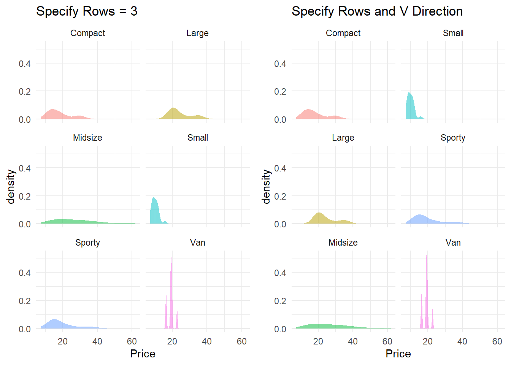
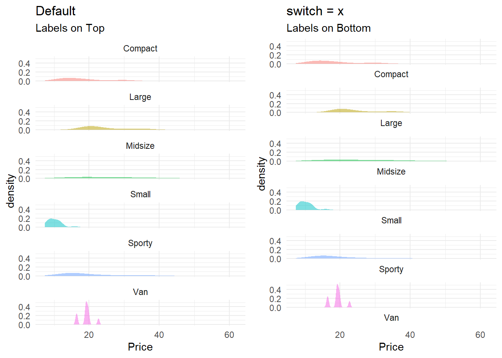
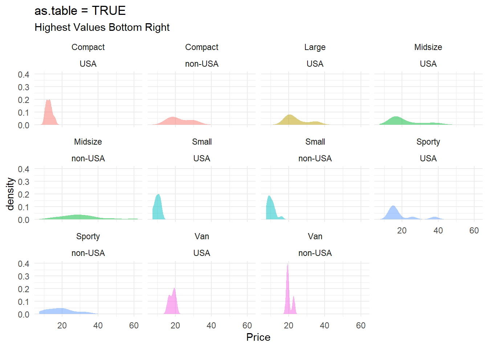

Facets
Note that many ideas on this page are taken directly from the ggplot2 book. A fantastic resource!
1 Facet One Variable
At times it is helpful to split a graph into separate panels. You have the most control over this process using either a facet_wrap or facet_grid layer.
gf_point(hwy~displ, data = mpg, color = ~manufacturer) %>%
gf_labs(title = "The Need for Facets", subtitle = "To Add Clarity To Cluttered Charts")
gf_point(hwy~displ, data = mpg, color = ~manufacturer, show.legend = FALSE) %>%
gf_facet_wrap(~manufacturer) %>%
gf_labs(title = "Facet Wrap")
1.1 Using | Notation for facet_wrap
Note, in ggformula, you can also use the | notation, which uses facet_wrap.
Example: gf_plot( Y ~ X | PanelVar , data = Dataset)
gf_point(hwy~displ|manufacturer, data = mpg, color = ~manufacturer, show.legend = FALSE) %>%
gf_labs(title = "Wrap Using | Notation")1.2 Facet Wrap (one variable)
Facet wrap allows you to specify how many rows and/or how many columns you’d like displayed. Additionally, you can change the location of the strip to make the facets easier to read.
To specify number of columns and/or rows use nrow and/or ncol.
Example: gf_facet_wrap(~Type, nrow = 3)
Example: gf_facet_wrap(~Type, ncol = 1)
gf_density(~Price, data = Cars93, fill = ~Type, show.legend = FALSE) %>%
gf_facet_wrap(~Type) %>%
gf_labs(title = "Facet Wrap Default Settings")gf_density(~Price, data = Cars93, fill = ~Type, show.legend = FALSE) %>%
gf_facet_wrap(~Type, nrow = 3) %>%
gf_labs(title = "Facet Wrap Specify Rows = 3")
gf_density(~Price, data = Cars93, fill = ~Type, show.legend = FALSE) %>%
gf_facet_wrap(~Type, nrow = 1) %>%
gf_labs(title = "Facet Wrap Specify Rows = 1")1.2.1 Change direction of facets
To change the direction of the facets, specify dir = “v”.
Example: gf_facet_wrap(~Type, nrow = 3, dir = “v”)
default = gf_density(~Price, data = Cars93, fill = ~Type, show.legend = FALSE) %>%
gf_facet_wrap(~Type, nrow = 3) %>%
gf_labs(title = "Specify Rows = 3")
vdirection = gf_density(~Price, data = Cars93, fill = ~Type, show.legend = FALSE) %>%
gf_facet_wrap(~Type, nrow = 3, dir = "v") %>%
gf_labs(title = "Specify Rows and V Direction")
grid.arrange(default, vdirection, nrow = 1)
1.2.2 Chaning Strip Location
To change the strip location, specify strip.position = “right”, “left”, “top” or “bottom”
Example: gf_facet_wrap(~Type, ncol = 1, strip.position = “right”)
gf_density(~Price, data = Cars93, fill = ~Type, show.legend = FALSE) %>%
gf_facet_wrap(~Type, ncol = 1, strip.position = "right") %>%
gf_labs(title = "Facet Wrap Specify Rows = 1 and Strip Position")You can also “switch” the location of the strip.
Top to Bottom: Use strip = “x” to move labels from top to bottom
top = gf_density(~Price, data = Cars93, fill = ~Type, show.legend = FALSE) %>%
gf_facet_wrap(~Type, ncol = 1) %>%
gf_labs(title = "Default", subtitle = "Labels on Top")
bottom = gf_density(~Price, data = Cars93, fill = ~Type, show.legend = FALSE) %>%
gf_facet_wrap(~Type, ncol = 1, switch = "x") %>%
gf_labs(title = "switch = x", subtitle = "Labels on Bottom")
grid.arrange(top, bottom, nrow = 1)
Right to Left Use strip = “y” to move labels from right to left
left = gf_density(~Price, data = Cars93, fill = ~Type, show.legend = FALSE) %>%
gf_facet_wrap(~Type, ncol = 1, switch = "y") %>%
gf_labs(title = "switch = y", subtitle = "labels on left")
grid.arrange(top, left, nrow = 1)
1.2.3 Axis of Facets
By default, only the “outer” axis and labels will appear on each panel. To force more axis and/or labels, use axes and/or axis.labels options.
Axes Options: “all”, “all_x”, “all_y” (show axes lines/tick marks on specified axes)
Axis Labels Options: “all”, “all_x”, “all_y” (show labels on specified axes)
Example: gf_facet_wrap( ~X , axes = “all”, axis.labels = “all_y”)
theme_set(theme_classic())
gf_density(~Price, data = Cars93, fill = ~Type, show.legend = FALSE) %>%
gf_facet_wrap(~Type) %>%
gf_labs(title = "Default - Margins Only")gf_density(~Price, data = Cars93, fill = ~Type, show.legend = FALSE) %>%
gf_facet_wrap(~Type, axes = "all_y") %>%
gf_labs(title = "axes = all_y", subtitle = "Adding Axes & Labels to JUST Y Axis")gf_density(~Price, data = Cars93, fill = ~Type, show.legend = FALSE) %>%
gf_facet_wrap(~Type, axes = "all", axis.labels = "all_y") %>%
gf_labs(title = "Axes = all & Labels = all_y", subtitle = "Adding axis lines to all axes, but only labels to Y")1.3 facet_grid (one variable)
Facet grid will organize facets into columns and/or rows based on how many categories exist in the variables used. You don’t have as much flexibility to adjust the number of columns nor rows, but the labels tend to be more clear if using more than one variable to facet.
The facet grid command follows the same Y ~ X notation that many ggformula commands follow. To order panels into rows, have the variable on the Y axis. To order panels into columns, have the variable on the X axis.
Example (cols): gf_facet_grid( ~ X )
Example (rows): gf_facet_grid( Y ~ . )
theme_set(theme_minimal())
gf_density(~Price, data = Cars93, fill = ~Type, show.legend = FALSE) %>%
gf_facet_grid(~Type) %>%
gf_labs(title = "Facet Grid into Columns")gf_density(~Price, data = Cars93, fill = ~Type, show.legend = FALSE) %>%
gf_facet_grid(Type~.) %>%
gf_labs(title = "Facet Grid into Rows")
2 Facet Two Varibles
To facet your graph based on two variables, you can either use facet_wrap or facet_grid.
2.1 Facet Wrap (2 variables)
Facet wraps with 2 variables will default to the labels stacked (one label on top of the other).
Example: gf_facet_wrap(V1 (top label) ~ V2 (bottom label))
gf_density(~Price, data = Cars93, fill = ~Type, show.legend = FALSE) %>%
gf_facet_wrap(Type~Origin) %>%
gf_labs(title = "Facet Wrap with 2 Variables")
2.1.1 Tabel Settings
The default settings (as.table = TRUE) will have the “highest” values in the bottom right. Adjusting as.table = FALSE makes highest values start at the top right instead.
Example: gf_facet_wrap(Y~X, as.table = FALSE)
gf_density(~Price, data = Cars93, fill = ~Type, show.legend = FALSE) %>%
gf_facet_wrap(Type~Origin, as.table = TRUE) %>%
gf_labs(title = "as.table = TRUE", subtitle = "Highest Values Bottom Right")
gf_density(~Price, data = Cars93, fill = ~Type, show.legend = FALSE) %>%
gf_facet_wrap(Type~Origin, as.table = FALSE) %>%
gf_labs(title = "as.table = FALSE", subtitle = "Highest Values Top Right")
2.1.2 Layout of Panels
We can adjust the layout of the panels still using the nrow, ncol, dir options. It may also be helpful to specify dropped factor levels to keep things consistent. The example below shows that there are no Large non-USA vehicles in the dataset, but having the blank panel helps line up the panels for easy readability.
Example: gf_facet_wrap(Y~X, nrow = 2, dir = “v”, drop = FALSE)
gf_density(~Price, data = Cars93, fill = ~Type, show.legend = FALSE) %>%
gf_facet_wrap(Type~Origin, nrow = 2, dir = "v") %>%
gf_labs(title = "drop = TRUE (default)")
gf_density(~Price, data = Cars93, fill = ~Type, show.legend = FALSE) %>%
gf_facet_wrap(Type~Origin, nrow = 2, dir = "v", drop = FALSE) %>%
gf_labs(title = "drop = FALSE", subtitle = "Panel for missing Large non-USA")2.2 Facet Grid (2 variables)
Facet grids with 2 variables may be easier to read as their labels are split.
Example: gf_facet_grid( Y ~ X )
gf_density(~Price, data = Cars93, fill = ~Type, show.legend = FALSE) %>%
gf_facet_grid(Type~Origin) %>%
gf_labs(title = "Origin as columns")gf_density(~Price, data = Cars93, fill = ~Type, show.legend = FALSE) %>%
gf_facet_grid(Origin~Type) %>%
gf_labs(title = "Origin as rows")3 Three (or more) Variables
Once you start adding in more than 2 variables - things can get complicated. Be aware of making your graph too complicated and decide if you should instead split things up into separate visuals.
Example: gf_facet_grid(Y1 + Y2 ~ X1 + X2)
gf_density(~Price, data = Cars93, fill = ~Type, show.legend = FALSE) %>%
gf_facet_grid(Origin+DriveTrain~Type, scales = "free") %>%
gf_labs(title = "Facet Grid with 3 Variables")4 Adjust Panel Scales
By default the x-axis and y-axis scales are fixed. There may be times when you want the scales to be adjusted based on the data. There are a few ways to adjust.
4.1 Free Scales
To allow scales to adjust based on panel you can use one of the following:
scales = “free_x”: the x scale is free, and the y scale is fixed.
scales = “free_y”: the y scale is free, and the x scale is fixed.
scales = “free”: x and y scales vary across panels.
Fixed scales make it easier to see patterns across panels; free scales make it easier to see patterns within panels.
default = gf_density(~Price, data = Cars93, fill = ~Type, show.legend = FALSE) %>%
gf_facet_wrap(~Type, ncol = 1, strip.position = "right") %>%
gf_labs(title = "Fixed Scales (Default)")
freey = gf_density(~Price, data = Cars93, fill = ~Type, show.legend = FALSE) %>%
gf_facet_wrap(~Type, ncol = 1, strip.position = "right", scales = "free_y") %>%
gf_labs(title = "scales = free_y")
grid.arrange(default, freey, nrow = 1)Another example from ggplot2 this time using economics_long data.
gf_line(value~date, data = economics_long) %>%
gf_facet_wrap(~variable, ncol = 1, strip.position = "right") %>%
gf_refine(scale_y_continuous(labels = label_number(scale_cut = cut_si("")))) %>%
gf_labs(title = "Economics data without free scales", subtitle = "Diffitult to see any trends")gf_line(value~date, data = economics_long) %>%
gf_facet_wrap(~variable, ncol = 1, scales = "free_y", strip.position = "right") %>%
gf_refine(scale_y_continuous(labels = label_number(scale_cut = cut_si("")))) %>%
gf_labs(title = "Economics data WITH free scales")4.2 Free Space
Similar to how we adjusted the scales, we can also adjust the “space”. When space is “free”, each column (or row) will have width (or height) proportional to the range of the scale for that column (or row).
Example: gf_facet_grid(Y~., scales = “free_y”, space = “free”)
gf_point(fct_reorder(model, hwy)~hwy, data = mpg, color = ~manufacturer, show.legend = FALSE) %>%
gf_facet_grid(manufacturer~., scales = "free_y") %>%
gf_theme(strip.text.y = element_text(angle=0)) %>%
gf_labs( y = "" , x = "Miles Per Gallon", title = "Default Space")gf_point(fct_reorder(model, hwy)~hwy, data = mpg, color = ~manufacturer, show.legend = FALSE) %>%
gf_facet_grid(manufacturer~., scales = "free_y", space = "free") %>%
gf_theme(strip.text.y = element_text(angle=0)) %>%
gf_labs( y = "" , x = "Miles Per Gallon", title = "Free Space")5 Adjusting Strip Labels
At times, the default strip labels may not be readable OR may not be very clear. There are several things we can do to adjust the readability of these strip labels.
5.1 Adjust angle of labels
When labels are on the right or left sides, the default orientation is vertical. This is not always the most readable. We can adjust the angle of the text to make the labels horizontal for easier readability.
Example: gf_theme(strip.text.y = element_text(angle=0))
default = gf_density(~Price, data = Cars93, fill = ~Type, show.legend = FALSE) %>%
gf_facet_grid(Type~.) %>%
gf_labs(title = "Default Vertical side Labels")
horizontal = gf_density(~Price, data = Cars93, fill = ~Type, show.legend = FALSE) %>%
gf_facet_grid(Type~.) %>%
gf_theme(strip.text.y = element_text(angle=0)) %>%
gf_labs(title = "Label Angle Adjusted (Horizontal)")
grid.arrange(default, horizontal)5.2 Label both variable & value
The labeller function label_both() will print out both the name of the variable and the value of the variable in each facet.
See the labeller reference for all things you’re able to do.
Label both for every variable: gf_facet_grid(Y ~ X1 + X2 , labeller = “label_both”)
Label both for specified variable(s): gf_facet_grid(Y ~ X1 + X2, labeller = labeller(X1 = label_both, X2 = label_value))
Label both for either column or row: gf_facet_grid(Y ~ X1 + X2, labeller = labeller(.cols = label_both, .rows = label_value))
theme_set(theme_light())
gf_point(mpg~wt, data = mtcars) %>%
gf_facet_grid(am~vs+cyl) %>%
gf_labs(title = "Default Labels")gf_point(mpg~wt, data = mtcars) %>%
gf_facet_grid(am~vs+cyl, labeller = "label_both")%>%
gf_labs(title = "Label Both Var & Value")gf_point(mpg~wt, data = mtcars) %>%
gf_facet_grid(am~vs+cyl, labeller = labeller(vs = label_both, cyl = label_value))%>%
gf_labs(title = "Label Both Var & Value", subtitle = "But only for certain variables")gf_point(mpg~wt, data = mtcars) %>%
gf_facet_grid(am~vs+cyl, labeller = labeller(.cols = label_both, .rows = label_value))%>%
gf_labs(title = "Label Both Var & Value", subtitle = "But only for Columns not Rows")5.3 Defining New Labels
At times, the default labels are either not very clear, or not what we want. We can create new labels and them pass these new labels into a labeller option within a facet layer.
Example: gf_facet_grid(~X, labeller = labeller(X = New_Labels))
# Define Labels
conservation_status <- c(
cd = "Conservation Dependent",
en = "Endangered",
lc = "Least concern",
nt = "Near Threatened",
vu = "Vulnerable",
domesticated = "Domesticated"
)
# Before
gf_bar(vore~., data = na.omit(msleep)) %>%
gf_facet_grid(~conservation) %>%
gf_labs(title = "Old Labels")
# After
gf_bar(vore~., data = na.omit(msleep)) %>%
gf_facet_grid(~conservation, labeller = labeller(conservation = conservation_status))%>%
gf_labs(title = "New Labels")5.4 Wrap Labels
If there are sufficient breaks between words in your labels, and your labels happen to be a bit long - you can try using the label_wrap option to fit the labels a bit better.
Example: gf_facet_wrap(~X, labeller = (X = label_wrap_gen(10)))
gf_point(hwy~displ, data = mpg, color = ~manufacturer, show.legend = FALSE) %>%
gf_facet_wrap(~manufacturer) %>%
gf_labs(title = "Default Labels")gf_point(hwy~displ, data = mpg, color = ~manufacturer, show.legend = FALSE) %>%
gf_facet_wrap(~manufacturer, labeller = (manufacturer = label_wrap_gen(10))) %>%
gf_labs(title = "Wrap Labels", subtitle = "See Land Rover label")
5.5 Adding units to labels
You may want to add units to your labels to make them more clear. One way of doing so is just pasting extra specification within your labeller option.
gf_point(hwy~displ, data = mpg, color = ~cyl, show.legend = FALSE) %>%
gf_facet_wrap(~cyl, labeller = labeller(cyl = ~paste(.x, "cylinders")))6 Reference Items within Panels
Sometimes it may be helpful to add all dots/lines/bars/etc. to each panel to compare each group to all groups.
6.1 Adding gray layer
To add a gray layer, start by transforming the data (making a “dummy” variable and coloring that gray), and then adding the additional layers on top.
Code to Add Gray Layer gf_plot(Y ~ X , data = transform(Dataset, PanelVar = NULL), color = “gray85”, alpha = 0.4)
gf_point(Petal.Length~Petal.Width, data=iris, color = ~Species) %>%
gf_facet_wrap(~Species) %>%
gf_theme(legend.position = "none") %>%
gf_refine(scale_color_viridis(discrete = TRUE)) %>%
gf_labs(title = "No Gray Reference Dots")gf_point(Petal.Length~Petal.Width, data=transform(iris, Species = NULL), color = "gray85", alpha = 0.4) %>%
gf_point(Petal.Length~Petal.Width, data=iris, color = ~Species) %>%
gf_facet_wrap(~Species) %>%
gf_theme(legend.position = "none") %>%
gf_refine(scale_color_viridis(discrete = TRUE)) %>%
gf_labs(title = "Gray Reference Dots Added")We use similar code as the example above if we want to add bars, lines, area etc to the background. Below is an example of a histgram instead of a scatterplot.
gf_histogram(~price, data = diamonds, fill=~cut, show.legend = FALSE) %>%
gf_facet_wrap(~cut) %>%
gf_labs(title = "No Gray Reference")gf_histogram(~price, data = transform(diamonds, cut = NULL), fill="gray85", show.legend = FALSE) %>%
gf_histogram(~price, data = diamonds, fill=~cut, show.legend = FALSE) %>%
gf_facet_wrap(~cut) %>%
gf_labs(title = "Gray Reference Added")6.2 Regression Lines
In the following example, we just add regression lines for each type of car using the lm( ) command.
gf_point(Price~Horsepower, data = Cars93, color = ~Type, show.legend = FALSE) %>%
gf_facet_wrap(~Type) %>%
gf_labs(title = "Default Scatterplot")gf_point(Price~Horsepower, data = Cars93, color = ~Type, show.legend = FALSE) %>%
gf_facet_wrap(~Type) %>%
gf_lm(show.legend = FALSE)%>%
gf_labs(title = "Regression Lines Added")gf_point(Price~Horsepower, data = Cars93, color = ~Type, show.legend = FALSE) %>%
gf_facet_wrap(~Type) %>%
gf_lm(show.legend = FALSE) %>%
gf_lm(interval = "confidence", fill = ~Type, alpha = 0.3, show.legend = FALSE)%>%
gf_labs(title = "Confidence Interval for Mean Response Added")gf_point(Price~Horsepower, data = Cars93, color = ~Type, show.legend = FALSE) %>%
gf_facet_wrap(~Type) %>%
gf_lm(show.legend = FALSE) %>%
gf_lm(interval = "prediction", fill = ~Type, alpha = 0.1, show.legend = FALSE)%>%
gf_lm(interval = "confidence", fill = ~Type, alpha = 0.2, show.legend = FALSE)%>%
gf_labs(title = "Prediction & Confidence Bands Added")6.3 Average Points
The following example is taken from the book ggplot2. In order to add the reference points for the means of each of the groups, you first create a new dataset, calculate the averages, and then rename your color/facet variable. When you create a plot, you’ll use the original data to create the facetted plot, then add a layer of just the average points from the newly created dataset.
irisLabels = iris %>%
group_by(Species) %>%
mutate(Sepal.Width.Ave = mean(Sepal.Width),
Sepal.Length.Ave = mean(Sepal.Length)) %>%
rename(NewSpecies = Species)
gf_point(Sepal.Length~Sepal.Width, data=iris, color = ~Species, alpha = 0.3) %>%
gf_point(Sepal.Length.Ave~Sepal.Width.Ave, color=~NewSpecies, data = irisLabels, size = 5) %>%
gf_theme(legend.position = "none") %>%
gf_facet_wrap(~Species)